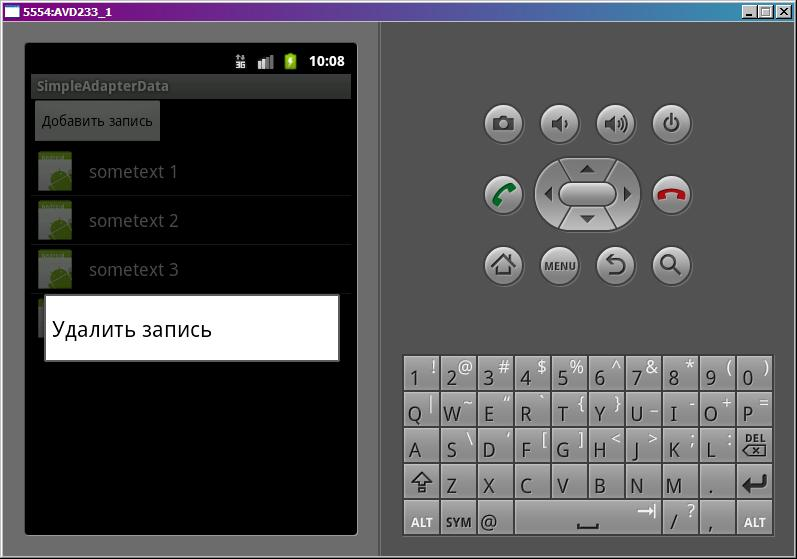

В этом уроке:
- используем SimpleAdapter для построения списка
- добавляем и удаляем записи в списке
Как выводить данные в список с помощью SimpleAdapter мы знаем. Теперь попробуем эти данные менять. Сделаем список с возможностью удаления и добавления записей. Добавлять будем кнопкой, а удалять с помощью контекстного меню.
Создадим проект:
Project name: P0511_SimpleAdapterData
Build Target: Android 4.0
Application name: SimpleAdapterData
Package name: ru.startandroid.develop.p0511simpleadapterdata
Create Activity: MainActivity
Экран main.xml:
<?xml version="1.0" encoding="utf-8"?>
<LinearLayout
xmlns:android="http://schemas.android.com/apk/res/android"
android:layout_width="fill_parent"
android:layout_height="fill_parent"
android:orientation="vertical">
<Button
android:layout_width="wrap_content"
android:layout_height="wrap_content"
android:onClick="onButtonClick"
android:text="Добавить запись">
</Button>
<ListView
android:id="@+id/lvSimple"
android:layout_width="match_parent"
android:layout_height="wrap_content">
</ListView>
</LinearLayout>Кнопка для добавления и список. Из интересного можно отметить свойство onClick у кнопки. Дальше станет понятно, что это.
Layout для пункта списка item.xml:
<?xml version="1.0" encoding="utf-8"?>
<LinearLayout
xmlns:android="http://schemas.android.com/apk/res/android"
android:layout_width="match_parent"
android:layout_height="wrap_content"
android:orientation="horizontal">
<ImageView
android:id="@+id/ivImg"
android:layout_width="wrap_content"
android:layout_height="wrap_content"
android:src="@drawable/ic_launcher">
</ImageView>
<TextView
android:id="@+id/tvText"
android:layout_width="wrap_content"
android:layout_height="wrap_content"
android:layout_gravity="center_vertical"
android:layout_marginLeft="10dp"
android:text=""
android:textSize="18sp">
</TextView>
</LinearLayout>Картинка и текст.
Код MainActivity.java:
package ru.startandroid.develop.p0511simpleadapterdata;
import java.util.ArrayList;
import java.util.HashMap;
import java.util.Map;
import android.app.Activity;
import android.os.Bundle;
import android.view.ContextMenu;
import android.view.ContextMenu.ContextMenuInfo;
import android.view.MenuItem;
import android.view.View;
import android.widget.AdapterView.AdapterContextMenuInfo;
import android.widget.ListView;
import android.widget.SimpleAdapter;
public class MainActivity extends Activity {
private static final int CM_DELETE_ID = 1;
// имена атрибутов для Map
final String ATTRIBUTE_NAME_TEXT = "text";
final String ATTRIBUTE_NAME_IMAGE = "image";
ListView lvSimple;
SimpleAdapter sAdapter;
ArrayList<Map<String, Object>> data;
Map<String, Object> m;
/** Called when the activity is first created. */
public void onCreate(Bundle savedInstanceState) {
super.onCreate(savedInstanceState);
setContentView(R.layout.main);
// упаковываем данные в понятную для адаптера структуру
data = new ArrayList<Map<String, Object>>();
for (int i = 1; i < 5; i++) {
m = new HashMap<String, Object>();
m.put(ATTRIBUTE_NAME_TEXT, "sometext " + i);
m.put(ATTRIBUTE_NAME_IMAGE, R.drawable.ic_launcher);
data.add(m);
}
// массив имен атрибутов, из которых будут читаться данные
String[] from = { ATTRIBUTE_NAME_TEXT, ATTRIBUTE_NAME_IMAGE };
// массив ID View-компонентов, в которые будут вставлять данные
int[] to = { R.id.tvText, R.id.ivImg };
// создаем адаптер
sAdapter = new SimpleAdapter(this, data, R.layout.item, from, to);
// определяем список и присваиваем ему адаптер
lvSimple = (ListView) findViewById(R.id.lvSimple);
lvSimple.setAdapter(sAdapter);
registerForContextMenu(lvSimple);
}
public void onButtonClick(View v) {
// создаем новый Map
m = new HashMap<String, Object>();
m.put(ATTRIBUTE_NAME_TEXT, "sometext " + (data.size() + 1));
m.put(ATTRIBUTE_NAME_IMAGE, R.drawable.ic_launcher);
// добавляем его в коллекцию
data.add(m);
// уведомляем, что данные изменились
sAdapter.notifyDataSetChanged();
}
@Override
public void onCreateContextMenu(ContextMenu menu, View v,
ContextMenuInfo menuInfo) {
super.onCreateContextMenu(menu, v, menuInfo);
menu.add(0, CM_DELETE_ID, 0, "Удалить запись");
}
@Override
public boolean onContextItemSelected(MenuItem item) {
if (item.getItemId() == CM_DELETE_ID) {
// получаем инфу о пункте списка
AdapterContextMenuInfo acmi = (AdapterContextMenuInfo) item.getMenuInfo();
// удаляем Map из коллекции, используя позицию пункта в списке
data.remove(acmi.position);
// уведомляем, что данные изменились
sAdapter.notifyDataSetChanged();
return true;
}
return super.onContextItemSelected(item);
}
}В методе onCreate мы формируем коллекцию Map-объектов, массивы сопоставления, создаем адаптер и список, добавляем возможность контекстного меню для списка.
Метод onButtonClick – его мы указали в main.xml в свойстве onClick кнопки. И теперь при нажатии на кнопку выполнится этот метод. Отдельный обработчик нажатия не нужен.
В этом методе мы создаем новый Map, добавляем его к коллекции данных и сообщаем, что данные изменились и надо обновить список.
Метод onCreateContextMenu – создание контекстного меню. Создаем только один пункт - для удаления записи.
В onContextItemSelected обрабатываем нажатие на пункт контекстного меню. При вызове контекстного меню объект, для которого оно было вызвано, передает в меню информацию о себе. Чтобы получить данные по пункту списка, для которого был совершен вызов контекстного меню, мы используем метод getMenuInfo. Объект AdapterContextMenuInfo содержит данные о View, id и позиции пункта списка. Мы используем позицию для удаления соответствующего Map из коллекции. После этого сообщаем, что данные изменились.
Все сохраним и запустим.

На скрине показано контекстное меню, которое вызывается при долгом нажатии на пункт списка. За ним виден список и кнопка для добавления записей.
Записи добавляются и удаляются. Редактирование я не стал делать. Там принцип тот же. Получаете Map и меняете его атрибуты.
Из кода видно, что для обновления списка надо поменять данные, которые использует адаптер, и вызвать его метод-уведомление.